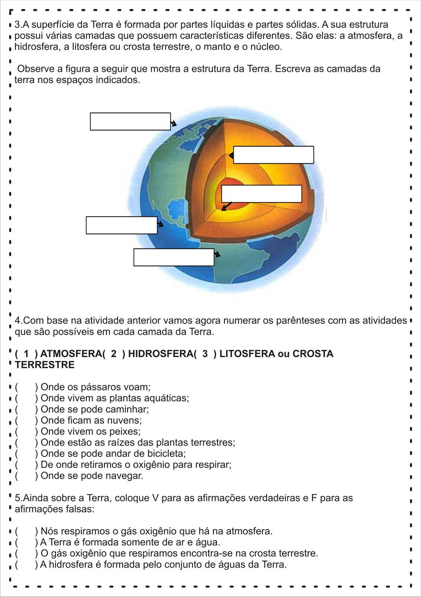
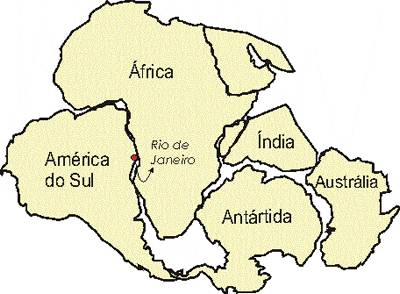
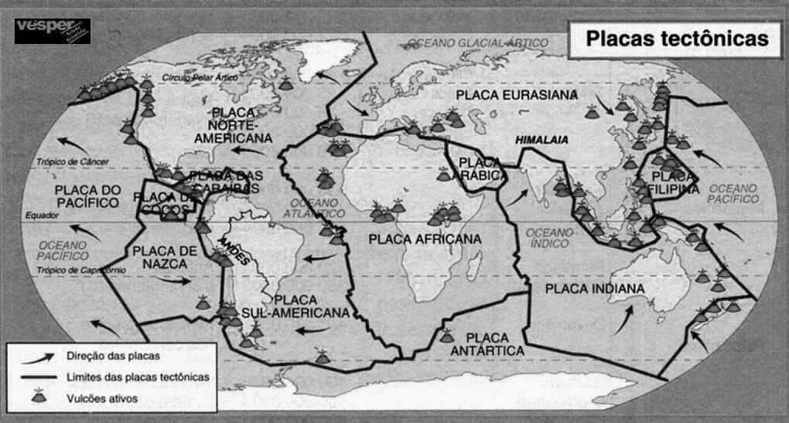
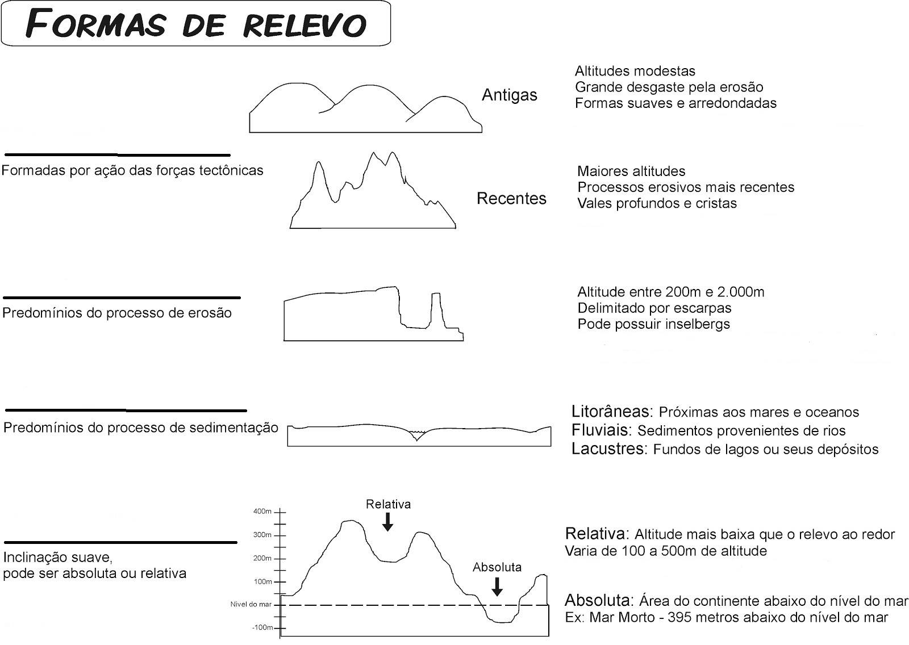
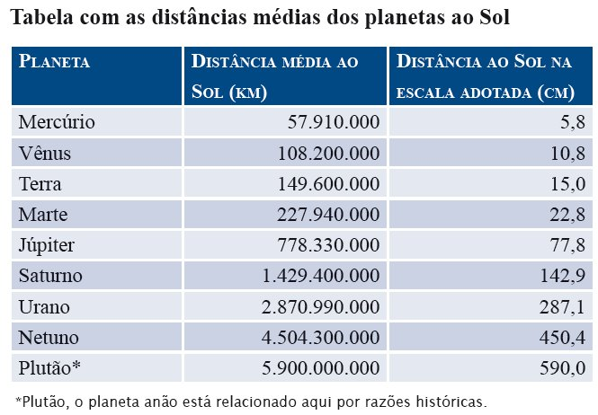

1) A superfície da Terra é formada por partes líquidas e sólidas. A sua estrutura possui várias camadas que possuem características diferentes. São elas: a (1) atmosfera, a (2) hidrosfera, a (3) litosfera ou crosta terrestre, o (4) manto e o (5) núcleo.
Observe a figura a seguir que mostra a estrutura da Terra. Escreva as camadas da Terra nos espaços indicados.

2) Com base na questão anterior, numere os parênteses com as atividades que são possíveis em cada camada da Terra.
Onde os pássaros voam.
Onde vivem as plantas aquáticas.
Onde se pode caminhar.
Onde ficam as nuvens.
Onde vivem os peixes.
Onde estão as raízes das plantas terrestres.
Onde se pode andar de bicicleta.
De onde retiramos o ar para respirar.
Onde se pode navegar.
3) Sobre a Terra, coloque V para as afirmações verdadeiras e F para as afirmações falsas:
Nós respiramos o gás oxigênio que há na atmosfera.
A Terra é formada somente de ar e água.
O gás oxigênio que respiramos encontra-se na crosta terrestre.
A hidrosfera é formada pelo conjunto de águas da Terra.
4) A origem da Terra é explicada de várias maneiras. As duas mais conhecidas são: a científica e a religiosa. Qual é a principal diferença entre estas duas explicações?
5) A imagem abaixo mostra como os continentes se dividiram a partir da Pangea. O que causou esta divisão?

6) Observe a ilustração abaixo e, de acordo com seus conhecimentos sobre vulcões, explique porque eles estão concentrados nos limites das placas tectônicas.

7) Na ilustração abaixo, escreva os nomes das formas do relevo correspondentes nos textos e nos desenhos:

8) Observe a tabela e responda as questões:

a) Quem está mais próximo do Sol, Marte ou Júpiter?
b) Qual planeta está mais longe do Sol, Terra ou Vênus?
c) A distância de Plutão até o Sol é aproximadamente quantas vezes maior que a distância de Mercúrio ao Sol?
d) Usando os valores da terceira coluna (em cm), faça as conversões:
i) A distância de Urano até o Sol em metros.
ii) A distância de Plutão até o Sol em quilômetros.
e) Usando os dados da segunda coluna (em km). Converta a distância de Mercúrio até o Sol para metros e para centímetros.